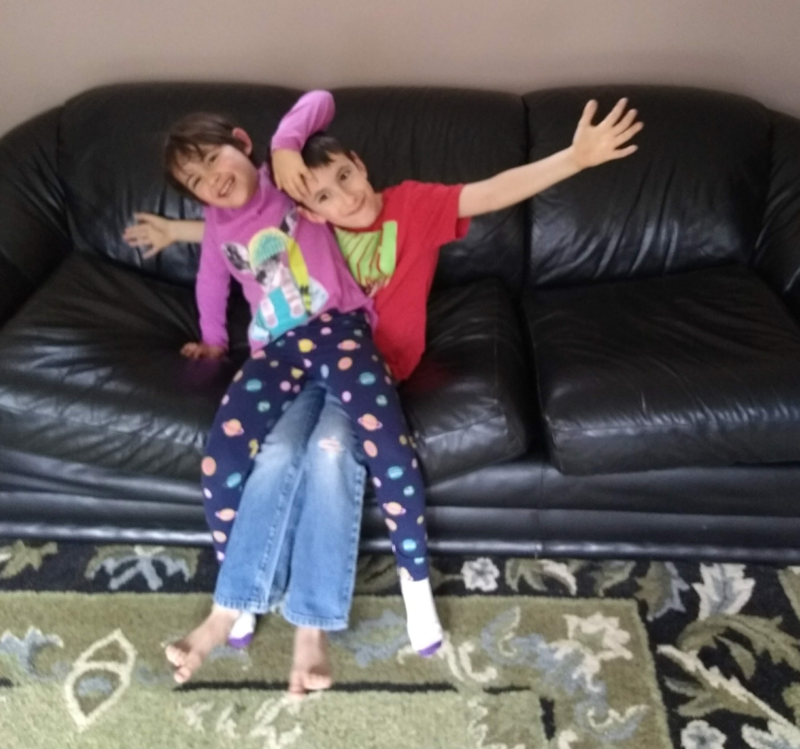

Meet Massachusetts Homeschoolers: The Pfordresher Family
By Julie Pfordresher
I had never considered homeschool as an education choice when I had my firstborn, Graham. I had been a high school chemistry teacher with a high school math teacher for a mom, a high school physics teacher for a dad, and a high school English teacher for a sister. Public education was in my blood. But then my son went to preschool.
In preschool, it was quickly noted how bright Graham was, but also how quirky. He was a loner. He didn’t dislike the other kids, and they didn’t dislike him, but he rarely interacted with them, not even in parallel play. While the other kids were pretending to be firefighters, Graham was creating math worksheets for entertainment. When it came time for kindergarten enrollment, we knew Graham would not be successful in a public school environment. He had taught himself multiplication, fractions, and negative numbers and was reading fluently at a third or fourth grade level. It is very common for gifted children to have accompanying social and sensory problems. Graham constantly moves. Yes, he was five and all little boys move a lot, but Graham needs to spin or pace to process. He needs constant stimulation—he’s always thinking aloud and touching everything. I couldn’t stand the thought of him being told to be quiet and sit still for six hours a day in school.
I had a daughter, Penny, two years after Graham, so she was three at the time, and I already knew I’d be staying home for at least two more years until she reached kindergarten age. My husband was the one to suggest homeschooling. He had had a poor experience in public school and many families in his faith community homeschooled their children, so it wasn’t a foreign idea to him. I would be home anyway and had an education background so I readily agreed to give it a try.
Now Graham is eight and Penny is six and we’re in our third year of official homeschooling. In our first unofficial year, we kept things child-led and explored unschooling. After all, Graham was only five and Penny was only three. But when Graham turned six and I had to submit paperwork for the first time, it felt like we needed to be “official.” I quickly learned that Graham will not do work he deems boring or pointless. Even though I had purchased more advanced materials for him, he still knew the majority of it and resisted having to “prove” what he knew by filling out worksheets. He also bucked against direct instruction from me. Up until then, he had taught himself everything. He would use me as a sounding board for his ideas, and he was fantastic at finding connections between the ideas he was mulling over. And the thing is, I also knew what he knew—I was right there with him every day, discussing his ideas and observing his explorations right alongside him. Why was I asking him to fill out worksheets? So that year, we ended up unschooling again.
I’d love to say that we are unschoolers, but it just didn’t sit right with me or my husband. We felt that math and language arts needed to be thorough, with science and social studies thrown in occasionally. After much trial and error, I found math and language arts programs for Graham and Penny that fit each of their personalities and learning styles. Graham is using programs that give him a lot of choice in what he works on, and are also challenging in content. Penny is using more traditional programs, but that are still manipulative-heavy and rarely have worksheets. We explore social studies and science all together mainly through library books and occasional YouTube videos, but not in any cohesive or linear manner. We are also avid gameschoolers.
We evaluate our decision to homeschool every year, but so far, it has worked beautifully. Penny is very social and a rule-follower and would do well in public school, but for now, she enjoys being home with me. Even at age six, she recognizes that six hours a day in school would be too much and then to have homework? No way. So far, Graham has no intention of ever attending school, but we’ll see what the future brings. I am happy to continue on this journey for as long as my kids need. After all, that’s the beauty of homeschool—we can provide exactly what is right for our kids.
Julie Pfordresher is a homeschooling mom of two silly kids, Graham (8), and Penny (6) in Uxbridge, MA. She is new to the area and lives with her mother-in-law, husband, the two kids, and a fluffy dog named Apollo. As a former high school chemistry teacher, she loves to talk shop about education practices, but she thinks she should have been a librarian. She loves playing board/card/dice games with her kids, taking six months to finish one crochet project, and is an avid reader, often maxing out her library borrows and holds. You can often find her and the kids at the dog park or on a hike.